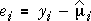
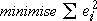

Model for numerical factors
The model without interaction that treats both factors as categorical is
yijk = µ + |
(explained by X) βi |
+ |
(explained by Z) γj |
+ |
(unexplained) εijk |
The simplest way to impose a smooth relationship between each numerical factor and the response is with a linear term. A linear model for both factors takes the form
yijk = µ + |
(explained by X) β xi |
+ |
(explained by Z) γ zi |
+ |
(unexplained) εijk |
This model corresponds to a plane in 3-dimensions.
Soybean yield
Consider a possible model for the soybean yield experiment in which the mean yield is given by the equation
mean soybean yield = 1.6 + 0.01 × Mn - 0.03 × Cu
This corresponds to a plane in 3-dimensions, as shown below.
Click anywhere between the Mn and Cu axes (in the yellow area of the diagram) to see how the plane translates any pair of values (Mn, Cu) into a predicted value of yield, via the equation.
Least squares
The linear model above contains three unknown parameters that must be estimated. We again define residuals to be differences between the actual response values and the values predicted by the model:

The residuals are vertical distances between the model plane and the data points. The parameters are estimated to minimise the sum of squares of these residuals — the method of least squares.

Soybean yield and trace elements
The diagram below shows the soybean yield data with the fitted values from a linear model, joined by a grid of coloured lines. The model residuals are shown as red vertical lines from the data points to their fitted values.
Initially the model used only has a constant term for the mean. Since neither of the factors affect the response in this model, all fitted values are equal and their least squares estimate is the overall response mean.
Select Linear from the pop-up menu for Manganese (Mn). This displays the least squares fit of a linear model containing a linear term for this variable (but no term for Cu). The amount of Mn seems to have an important influence on the yield.
Finally select Linear from the pop-up menu for Copper (Cu). This displays the least squares fit for the full linear model for the two controlled variables.
Finally click the buttons y-x and y-z to rotate the fitted model.
| Do you see any problem with the fit of this model? |